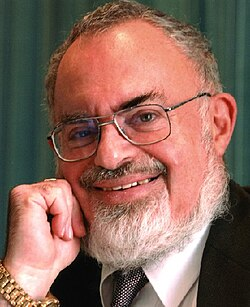

Stanton Friedman
Nuclear physicist and UFO researcher, 1934 to 2019

Worked on nuclear propulsion projects before devoting himself to UFO research. His 1978 interview with Jesse Marcel restarted the Roswell story, and he later championed the Majestic 12 papers as authentic. 1,2
Open in the interactive Watcher
Related
- Roswell revived Revived Roswell in 1978
- Roswell
- Majestic 12 Defended the MJ-12 papers
Sources
- Stanton T. Friedman Wikipedia
- Roswell incident Wikipedia